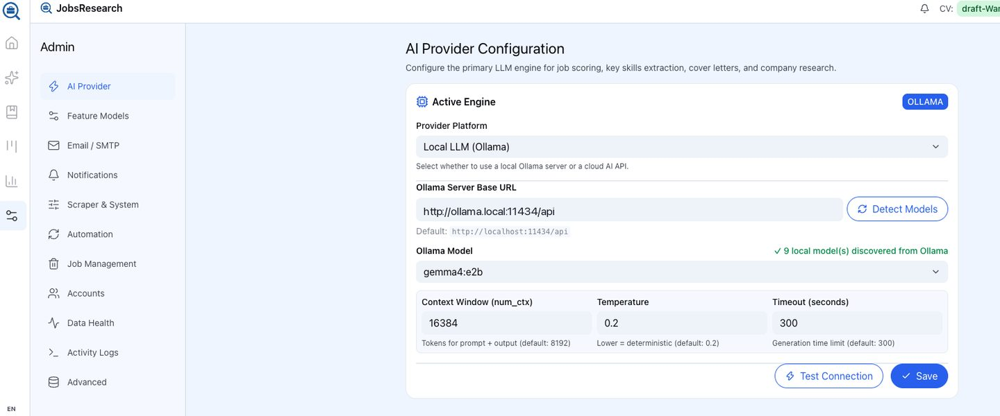
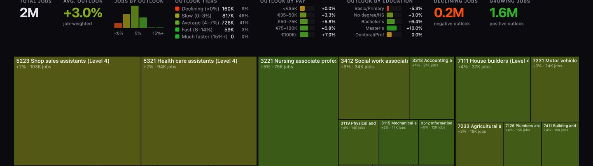
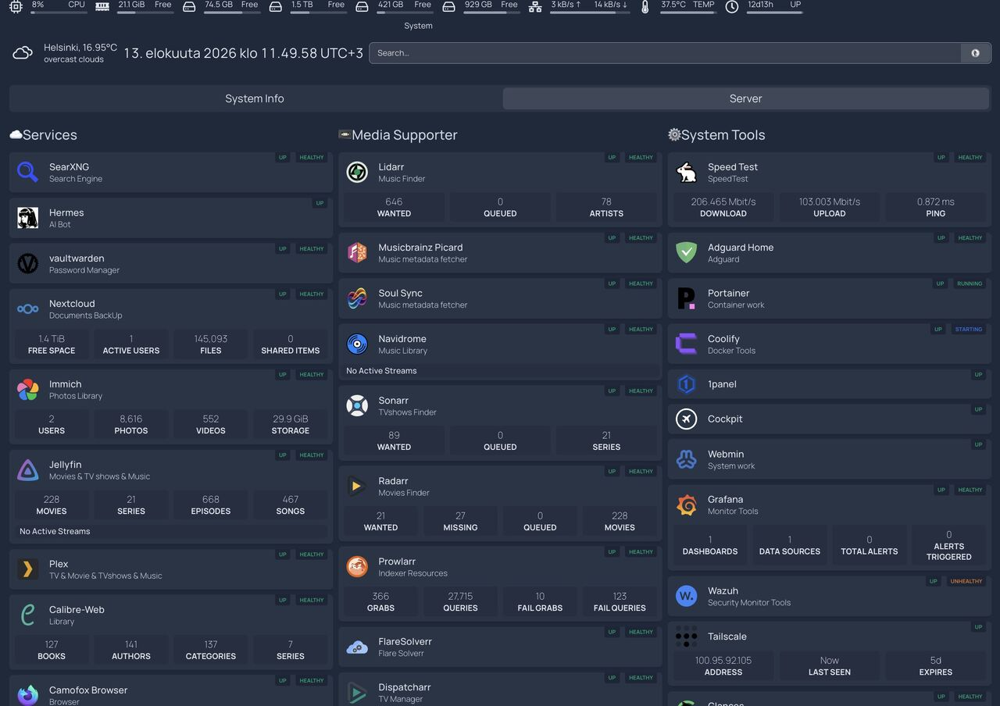
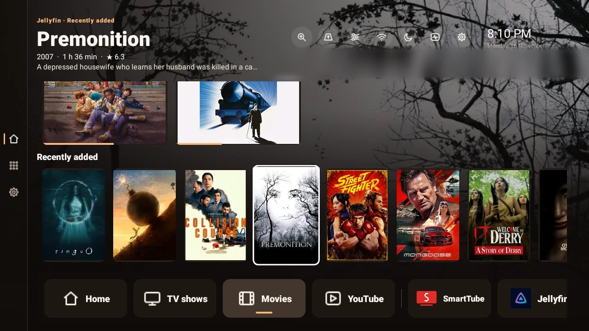

Four selected builds
AI systems, product delivery, explorable data, infrastructure and one rebuilt device.
01 JobsResearch
10/2025 — presentAI matching with reasons you can inspect
Sole author — architecture, full stack, and lead of an 8-agent AI team
An application that scores job postings against a CV and explains every score. It has collected 160,000+ postings from five sources, and adds company research and cover-letter workflows around each match.
- Score + rationale
- Semantic search
- Multiple LLM providers
- Python
- React
- AI agents
- Vector embeddings
- PostgreSQL
- Docker

View full size ↗Look inside: model selection and per-feature limits make the AI layer configurable. Open the image to inspect the controls. 02 Fi-Job-Maps
03/2026Make a labour market explorable
Sole author, full-stack developer & data engineer · 14 GitHub stars
Occupational statistics are difficult to compare in tables. I adapted an existing treemap foundation for Finnish data, adding a Python data pipeline and AI-exposure estimates.
- 459 occupation records
- Traceable data sources
- Public interactive map
- Python
- StatFin PxWeb
- Data visualisation
- AI exposure

View full size ↗Read the visual: tile area represents employment; colour represents the selected metric. AI exposure is an estimate, not a prediction of job losses. 03 Self-hosted Linux lab
A place to deploy, monitor and run my own services
Personal infrastructure · Linux administration & self-hosting
My Ubuntu server brings personal applications, deployment tools and monitoring into one environment. The dashboard connects services for search, documents, photos and media with the tools used to operate them.
- Ubuntu 24.04 LTS
- Prometheus + Grafana
- Self-hosted applications
- Ubuntu
- Linux
- Docker
- Coolify
- Portainer
- Prometheus
- Grafana

View full size ↗My service dashboard, captured in August 2026. Service badges and usage figures describe that screenshot, not current availability. 04 Projector system rebuild
11/2026A new system for hardware its maker left behind
Sole author · personal project · cloud and local AI agents
My projector was stuck on Android 4.4 with no more updates. I mapped how the factory system drives the hardware, then built a replacement Android 7.1 system on the original kernel. It runs more smoothly than the factory system and uses the Wi-Fi chip’s 5 GHz band, which the factory system never switched on.
- Android 4.4 → 7.1
- 5 GHz Wi-Fi switched on
- Automatic rollback
- Android (AOSP)
- Java
- C
- Python
- ARM
- Reverse engineering
- Local LLM

View full size ↗The Movies tab of my own TV launcher, showing films from my home server, on the projector in November 2026. The projector’s brand is left out on purpose.